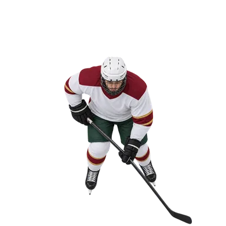

NY KONKURRENCE
Hvad skal publikum spille?
Vælg spillet til konkurrencen. På næste side tilpasser du hold, præmie og indstillinger.



Hold pucken i live
Aflever til dine medspillere, undgå modstanderne og hold pucken i live så længe som muligt.
Vælg spil
02
Kommer snart
Der er mere på vej til pausen. Et nyt spil tager snart plads på holdet.
03
Kommer snart
Flere måder at få publikum med. Vi gør plads til endnu en udfordring.
Én konkurrence. Ét spil. Kampens top 5 vinder.
Tilbage til Overblik
Trin 1 af 3